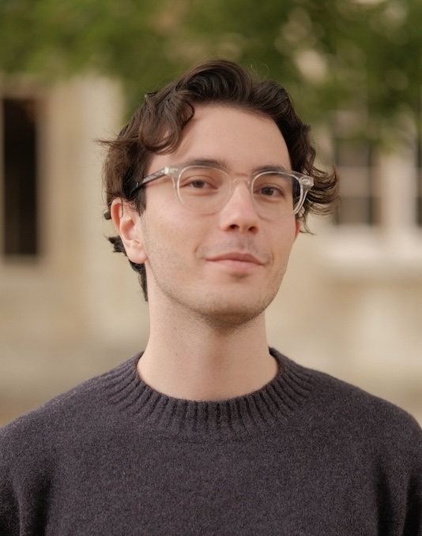

I am a PhD first year student at LAMSADE,
Dauphine-PSL in Paris, France.
My research is centered on scalable schema inference, data quality analysis and schema-driven analytics over heterogeneous data lakes.
The work is carried out under the supervision of Pr. Dario COLAZZO within LAMSADE's Data Science Team.
The project is
part of Inria's ANR funded project TopOL : Top of the Lake.